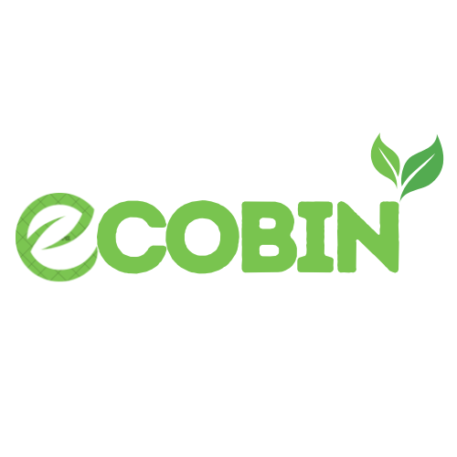

Portfolio & Proyek Terbaik üöÄ
Beberapa karya dan proyek yang telah saya kerjakan, menggunakan berbagai tools dan keahlian.

Smart trash can
Membuat tempat sampah pintar berbasis arduino uno, dengan menggabungkan sensor lain nya seperti infra merah.
Tools/Skills: Arduino, Infrared sensor
Lihat Proyek →

Web perpustakaan
Develop web perpustakaan untuk mencerdaskan warga indonesia.
Tools/Skills: Xampp, MySQL, PHP, JavaScript
Lihat Proyek →